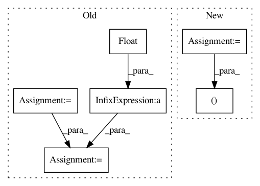

56926bc8b4a158e1c40cddbc795303bc6a66f44d,semantic-segmentation/deeplabv3plus/model_inference.py,,post_process,#,46
Before Change
def post_process(output, old_size, taget_size):
ratio = float(taget_size)/max(old_size)
new_size = tuple([int(x*ratio) for x in old_size])
post_processed = output[0:new_size[0], 0:new_size[1]]
post_processed = cv2.resize(
After Change
def post_process(output, old_size, target_size):
ratio = min(np.divide(desired_size, old_size))
new_size = (int(old_size[0]*ratio), int(old_size[1]*ratio))
post_processed = output[0:new_size[0], 0:new_size[1]]
post_processed = cv2.resize(
In pattern: SUPERPATTERN
Frequency: 3
Non-data size: 6
Instances
Project Name: sony/nnabla-examples
Commit Name: 56926bc8b4a158e1c40cddbc795303bc6a66f44d
Time: 2019-05-23
Author: sukriti.mehrotra@sony.com
File Name: semantic-segmentation/deeplabv3plus/model_inference.py
Class Name:
Method Name: post_process
Project Name: sony/nnabla-examples
Commit Name: 56926bc8b4a158e1c40cddbc795303bc6a66f44d
Time: 2019-05-23
Author: sukriti.mehrotra@sony.com
File Name: semantic-segmentation/deeplabv3plus/image_preprocess.py
Class Name:
Method Name: resize
Project Name: interactiveaudiolab/nussl
Commit Name: 6ad8b3a6d6e98dda6f83390c6f7935377788d2bc
Time: 2015-07-31
Author: fpishdadian@u.northwestern.edu
File Name: KAM.py
Class Name: Kernel
Method Name: sim